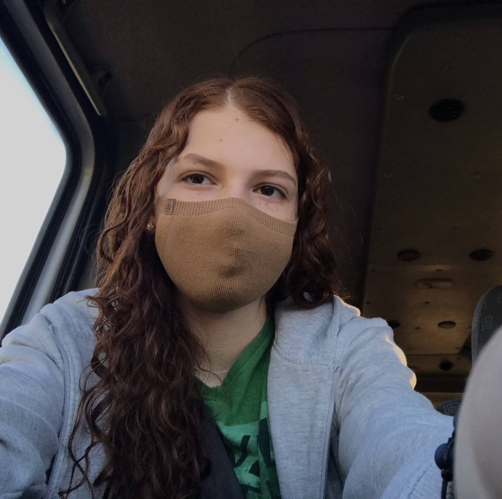

Se interessou e quer saber mais?
Atividade Física
Material que foi cedido pelos professores Antonio Carlos Espit e Jerson Luiz Isoton, do Instituto Federal Catarinense, Campus Concórdia
https://www.minhavida.com.br/fitness/tudo-sobre/17102-pular-corda
https://www.dicasdetreino.com.br/treino-de-abdominal-iniciante/Saúde Mental
https://bvsms.saude.gov.br/jovens-e-saude-mental-em-um-mundo-em-mudanca-tema-do-dia-mundial-da-saude-mental-2018-comemorado-em-10-10/ https://hospitalsantamonica.com.br/quais-sao-os-principais-perigos-a-saude-mental-dos-jovens-na-atualidade/ https://canaltech.com.br/saude/diferenca-transtorno-doenca-disturbio-sindrome-172637/
https://hospitalsantamonica.com.br/transtornos-mentais-na-adolescencia-metade-das-doencas-comeca-aos-14-anos/
https://www.pfizer.com.br/noticias/ultimas-noticias/saude-mental-na-pandemia-do-coronavirus-como-manter-o-bem-estar-em-tempos-de-distanciamento-social
https://www.unicef.org/brazil/comunicados-de-imprensa/impacto-da-covid-19-na-saude-mental-de-criancas-adolescentes-e-jovens
hhttps://manualdohomemmoderno.com.br/fitness/10-exercicios-fisicos-que-voce-pode-fazer-em-casa
hhhttps://www.boaconsulta.com/blog/conheca-os-beneficios-de-praticar-atividade-fisica/
Referências
Sobre Nós
Adriano Bomm
Iago Anderson
Beatriz Paludo
Este site é um trabalho acadêmico realizado pelos alunos Adriano Arthur Bomm, Beatriz Paludo e Iago Anderson do Instituto Federal Catarinense Campus Concórdia.